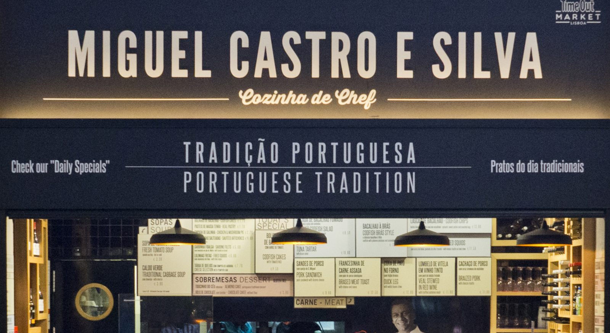
Time Out Market
Lisboa
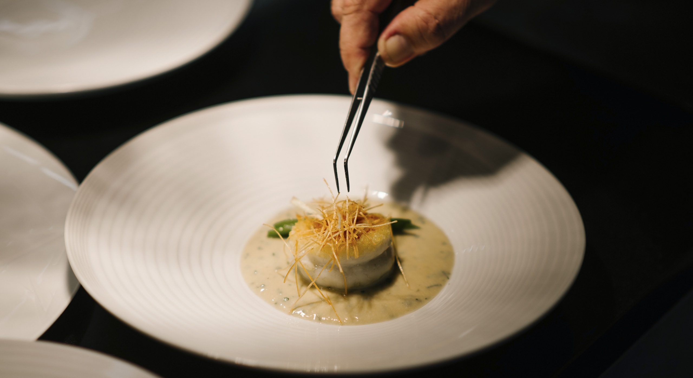
Cozinheiro · Porto, 1961
Do Porto ao Douro, de Lisboa ao mundo — há mais de trinta e cinco anos.
Ver o filme
01O Chef
Cozinheiro, consultor e autor. Começou em 1992, no Porto, e hoje assina casas em Lisboa, Porto, Gaia e no Douro.
02Projetos

Lisboa
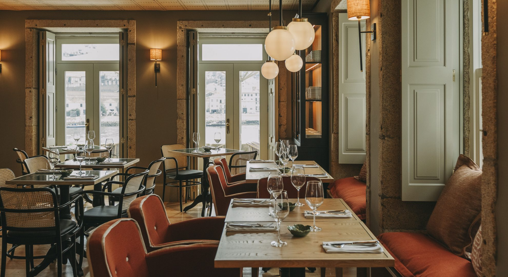
Porto
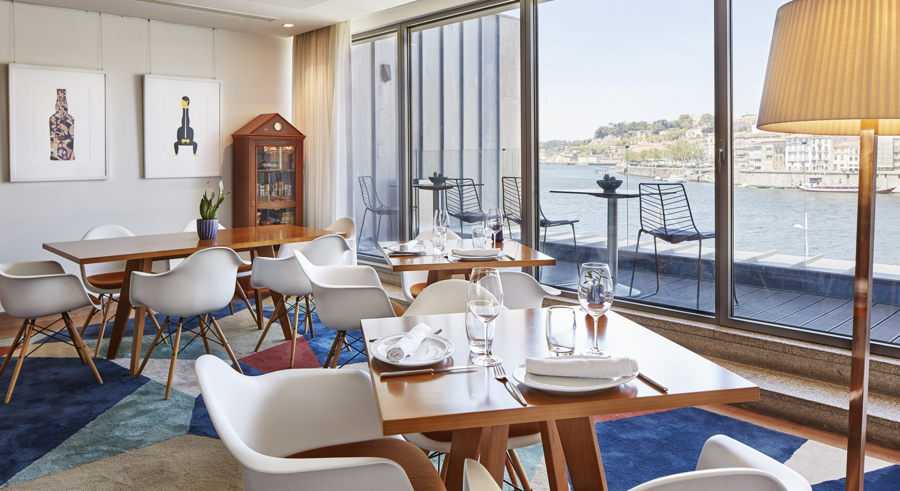
Vila Nova de Gaia
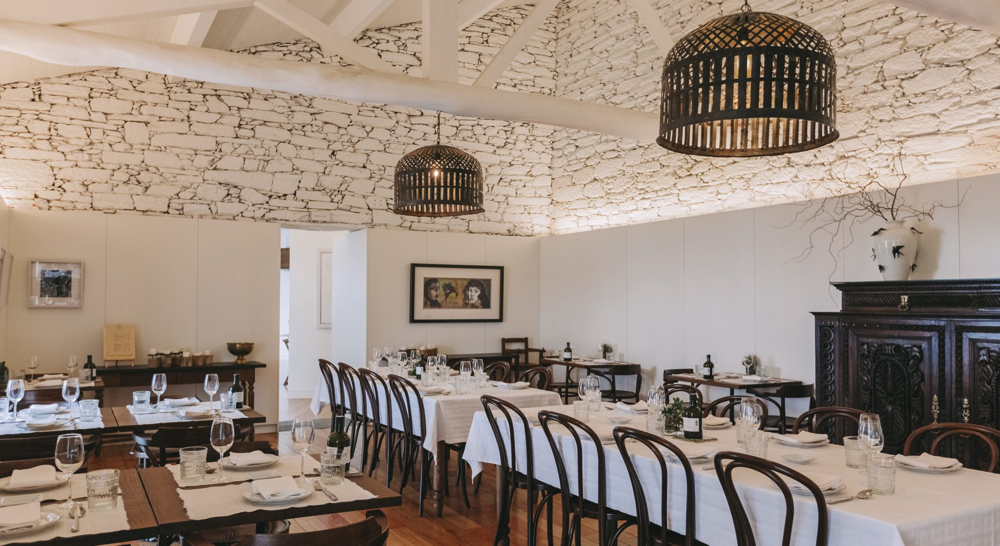
Douro
03Percurso
04Livros
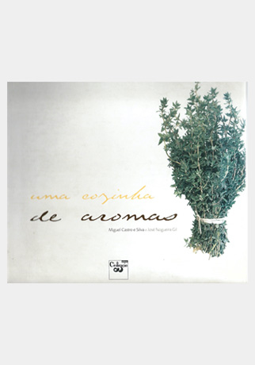
2001
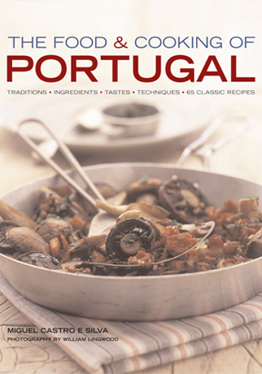
2007
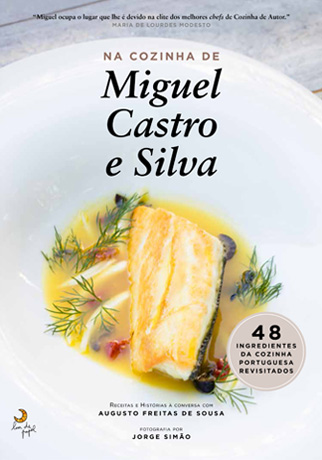
2016
05Imprensa
“Um dos chefs do momento na cidade.”Time Out Lisboa
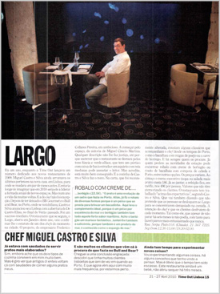
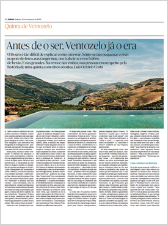
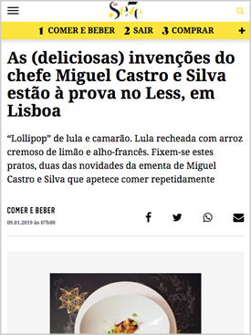
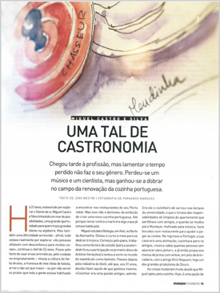
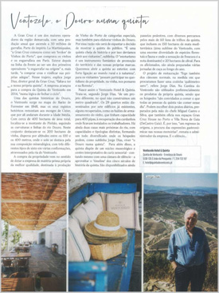
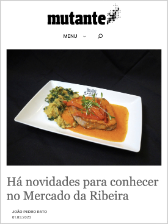
06Galeria
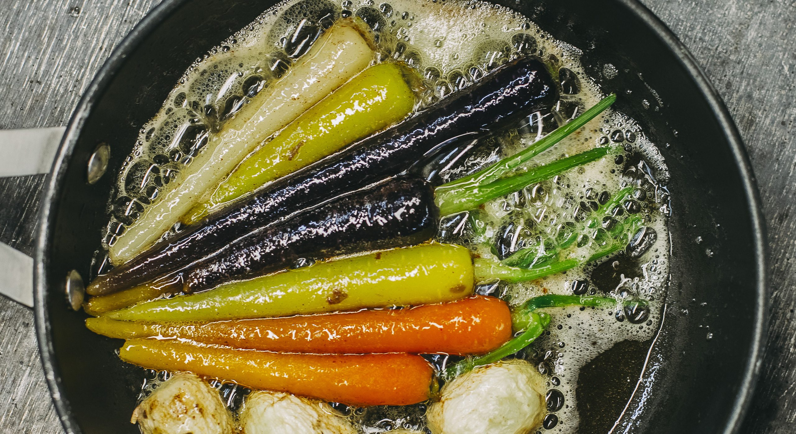
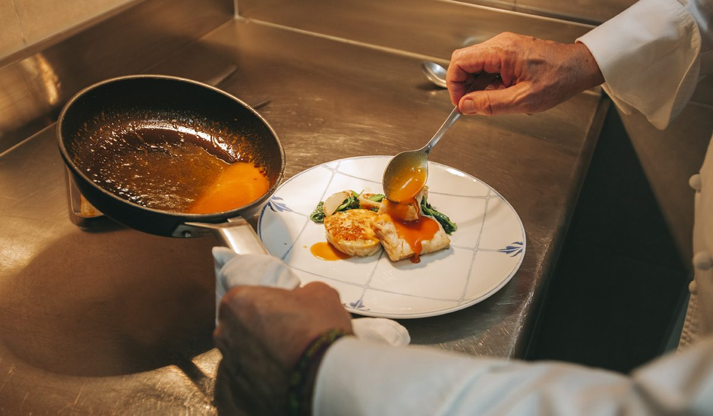
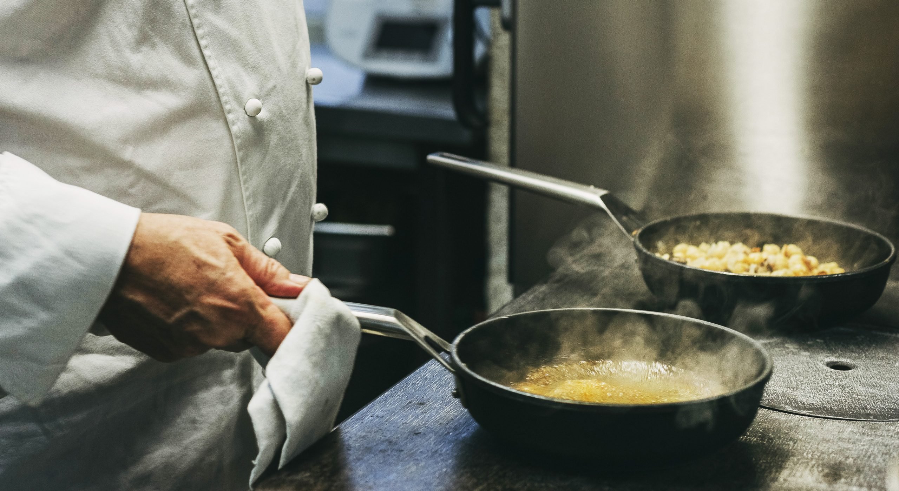
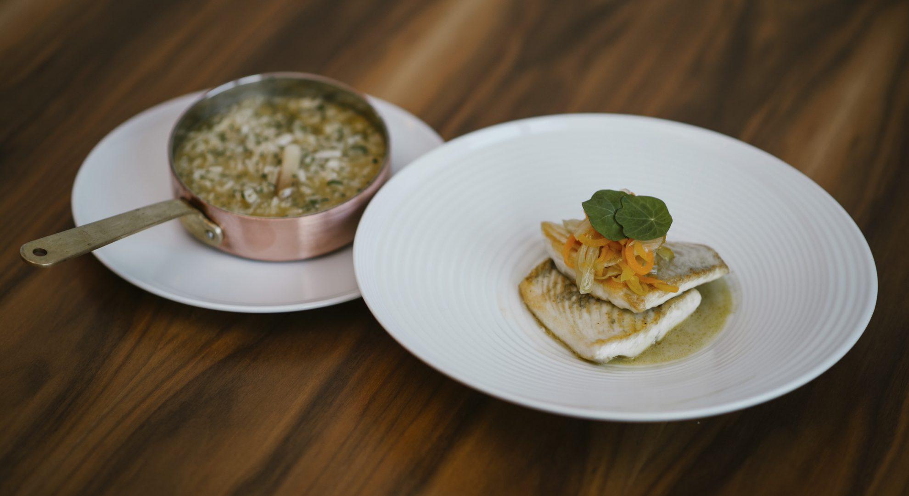
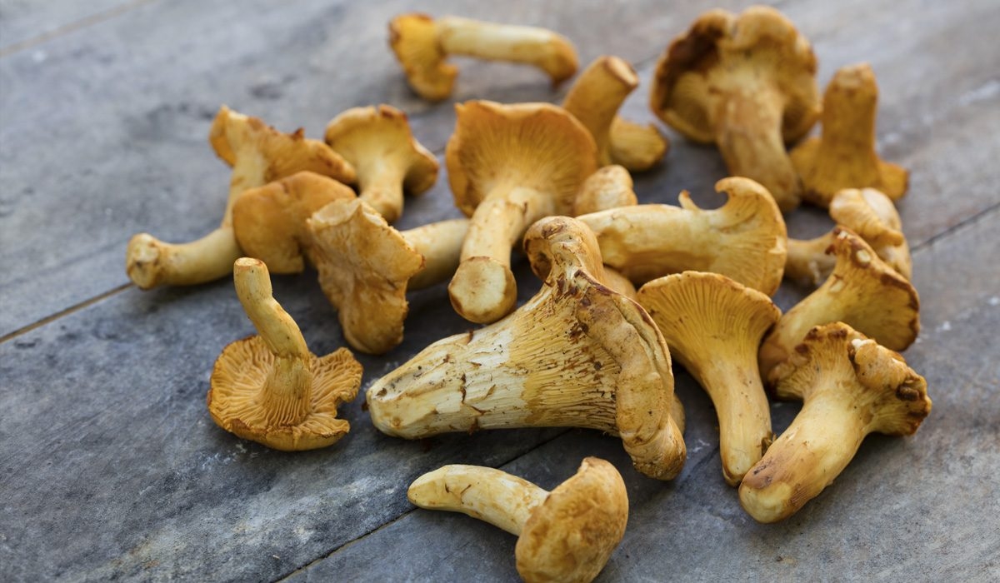
07Redes sociais
Pratos, bastidores e as casas do dia a dia — do Mercado da Ribeira ao Douro.
Ver no Instagram →últimas publicaçõesChef Miguel Castro e Silva
Página oficial
Na Cantina de Ventozelo, a cozinha faz-se com o que o Douro dá.
08Contactos
Eventos privados, consultoria ou imprensa.